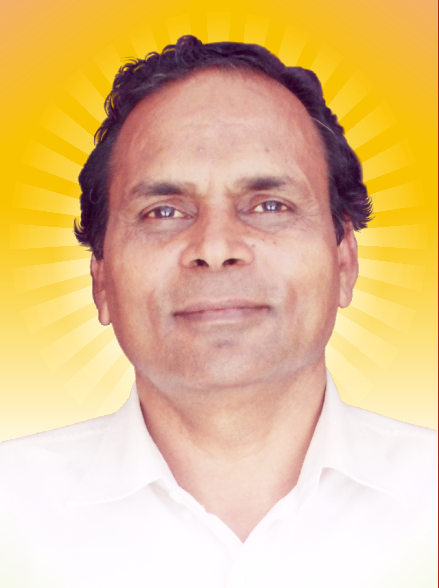
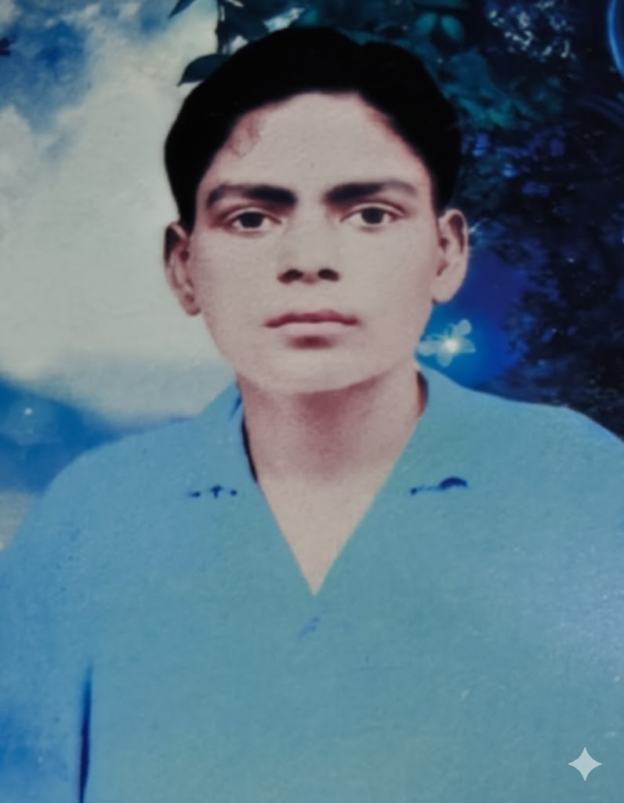
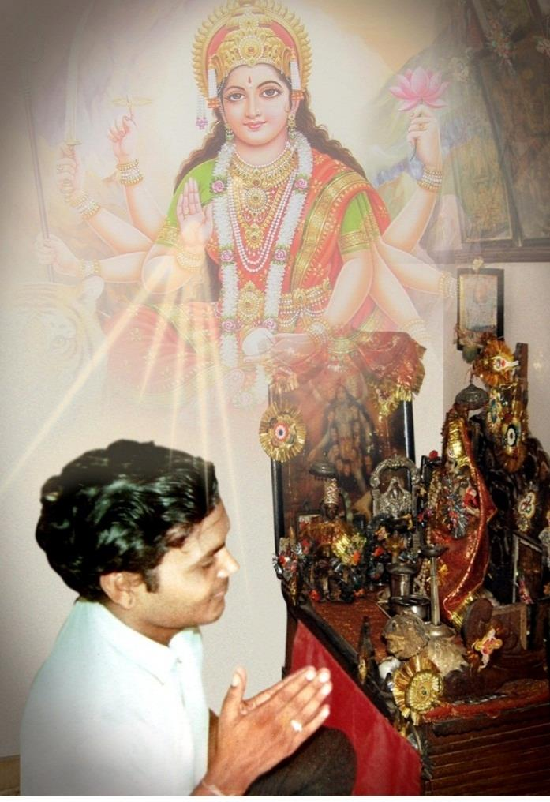
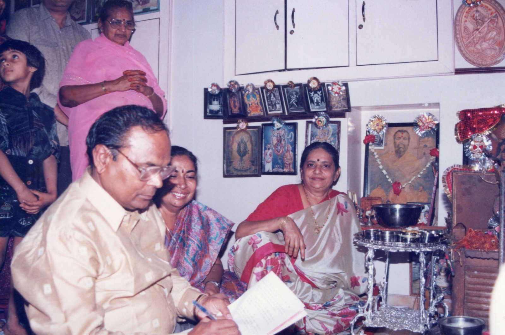

A brilliant young seeker whose uncompromising search for truth became a contemporary spiritual path—and whose compassion gave thousands of girls the dignity of education, values and hope.

Born16 July 1944 Jodhpur
Spiritual questBegan in 1959 at the age of fifteen
Mission in actionFounding President from 1996
A Life Awakened by a Question
Before he became a guide, he was a grieving fifteen-year-old searching for an answer
Bhaiyaji's spiritual journey did not begin with certainty. It began with loss—with a young mind refusing to look away from death, and a tender heart asking what remains when the person we love is suddenly no longer before us.

Jodhpur · 1959
The fire that changed everything
His father, Shri Vijaykishan Ji Sharda, had passed away. Before the funeral pyre stood a boy of fifteen—old enough to feel the finality of the moment, yet young enough for every unanswered question to arrive with overwhelming force.
The body before him looked like his father, but the warmth, the voice and the familiar presence were gone. Grief became bewilderment; bewilderment became inquiry. Something had departed—but what was it? Where had it gone? And what, then, was life?
The questions within him
Why is my father not speaking? What has left this body? Where has he gone—and what is the power that makes us alive?
A search without borrowed answers
He would not silence the questions with convention
An exceptional student of science, young Nandkishore could not accept an explanation merely because it was old, familiar or widely repeated. Ritual without understanding did not satisfy him. Neither did fear, superstition or blind belief.
He resolved to know through experience. What began in sorrow slowly became a disciplined search for the eternal principle behind the body, consciousness and the universe. The pain of losing one beloved person widened into compassion for every human being living with the same questions.
Inquiry became discipline: Bhaiyaji during Sadhna.
Surrender and realization
At the feet of Jagatjanani Maa, the restless search found direction
With complete devotion, he surrendered himself to Maa Tripurasundari. Years of intense Sadhna transformed intellectual inquiry into lived understanding. Yet he never turned spiritual realization into distance or mystery.
He wanted the ordinary householder—the student, parent and working person—to understand, examine and practise spiritual knowledge while remaining fully engaged with life. From this compassion emerged Buddhi-Vivek Yog Sadhna: a contemporary path of awakened intelligence, discernment and inner steadiness.

For Bhaiyaji, knowledge ripened through surrender to Jagatjanani Maa.

A living fellowship of knowledge and service: Bhaiyaji with Madhu Maa and Maa Basanti at Manidweep.A presence that did not end
The mortal journey closed; the questions continued to illuminate
The Trust received Rajasthan's Bhamashah Award for five consecutive years from 1999 to 2003. Bhaiyaji saw that honour not as his own, but as recognition of students who kept moving forward despite hardship.
On 24 January 2003, Vivekananda Jayanti, he left his mortal form. The boy who once stood before his father's pyre had spent his life discovering what death could not take away. His writings, Sadhna, institutions and the people transformed by his guidance continue to carry that discovery forward.
He began by asking what leaves the body. He answered by building a life whose light did not leave with him.
A Life Awakened by a Question
Before he became a guide, he was a grieving fifteen-year-old searching for an answer
Bhaiyaji’s spiritual journey did not begin with certainty. It began with loss—with a young mind refusing to look away from death, and a tender heart asking what remains when the person we love is suddenly no longer before us.
Jodhpur · 1959
The fire that changed everything
His father, Shri Vijaykishan Ji Sharda, had passed away. Before the funeral pyre stood a boy of fifteen—old enough to feel the finality of the moment, yet young enough for every unanswered question to arrive with overwhelming force.
The body before him looked like his father, but the warmth, the voice and the familiar presence were gone. Grief became bewilderment; bewilderment became inquiry. Something had departed—but what was it? Where had it gone? And what, then, was life?
The questions within him
Why is my father not speaking? What has left this body? Where has he gone—and what is the power that makes us alive?
A search without borrowed answers
He would not silence the questions with convention
An exceptional student of science, young Nandkishore could not accept an explanation merely because it was old, familiar or widely repeated. Ritual without understanding did not satisfy him. Neither did fear, superstition or blind belief.
He resolved to know through experience. What began in sorrow slowly became a disciplined search for the eternal principle behind the body, consciousness and the universe. The pain of losing one beloved person widened into compassion for every human being living with the same questions.
Inquiry became discipline: Bhaiyaji during Sadhna.
Surrender and realization
At the feet of Jagatjanani Maa, the restless search found direction
With complete devotion, he surrendered himself to Maa Tripurasundari. Years of intense Sadhna transformed intellectual inquiry into lived understanding. Yet he never turned spiritual realization into distance or mystery.
He wanted the ordinary householder—the student, parent and working person—to understand, examine and practise spiritual knowledge while remaining fully engaged with life. From this compassion emerged Buddhi-Vivek Yog Sadhna: a contemporary path of awakened intelligence, discernment and inner steadiness.
For Bhaiyaji, knowledge ripened through surrender to Jagatjanani Maa.A living fellowship of knowledge and service: Bhaiyaji with Madhu Maa and Maa Basanti at Manidweep.
A presence that did not end
The mortal journey closed; the questions continued to illuminate
The Trust received Rajasthan’s Bhamashah Award for five consecutive years from 1999 to 2003. Bhaiyaji saw that honour not as his own, but as recognition of students who kept moving forward despite hardship.
On 24 January 2003, Vivekananda Jayanti, he left his mortal form. The boy who once stood before his father’s pyre had spent his life discovering what death could not take away. His writings, Sadhna, institutions and the people transformed by his guidance continue to carry that discovery forward.
He began by asking what leaves the body. He answered by building a life whose light did not leave with him.
The Path He Gave
Buddhi-Vivek Yog Sadhna for contemporary life
01 · Clarity
Awaken intelligence
Refine the intellect and discernment so that decisions arise from awareness rather than habit or fear.
02 · Balance
Unite both lives
Bring material duties and spiritual growth into harmony instead of treating them as opposing paths.
03 · Universality
Open to every seeker
A practical path for every age, background and faith—grounded in experience, sincerity and self-transformation.